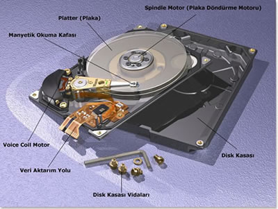

Verilerimizi kalıcı olarak saklamak için kullanılan bir saklama birimidir. Sabit disk döner bir mil üzerine sıralanmış, metal veya plastikten yapılma ve üzerine manyetik bir tabaka ile kaplıplakalar ve bu plakaların alt ve üst kısımlarında yerleşen okuma/yazma kafalarından oluşur. Veriler sabit diskteki bu manyetik tabakalar üzerine kaydedilir. Verilerin kaydedilmesinde mıknatıslanma mantığı kullanılır.
Mıknatısın iki kutbu dijital olarak 1 ve 0'ı temsil eder.
Verilerimiz böylece küçük mıknatıslar halinde bu manyetik ortamlara yazılır. Bu manyetik tabakaların üstü dairesel çizgilerle örtülür. Bunlara iz(trank)denir. Sabit diskte birden fazla plakalar üst üste dizilmiştir.Bu plakaların hem alt hem üst tarafına bilgi yazılabilir. Herbir plaka üzerinde altlı-üstlü yerleşen ve herbirinin ortadaki mile uzaklığı aynı olan izlerin oluşturduğu gruba silindir ismi verilir.